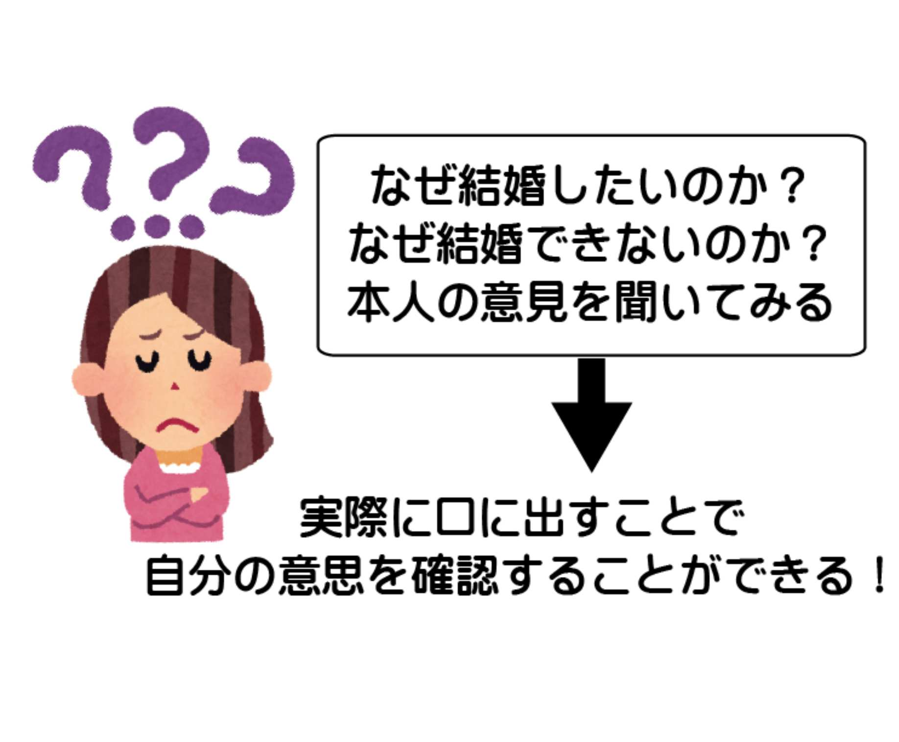
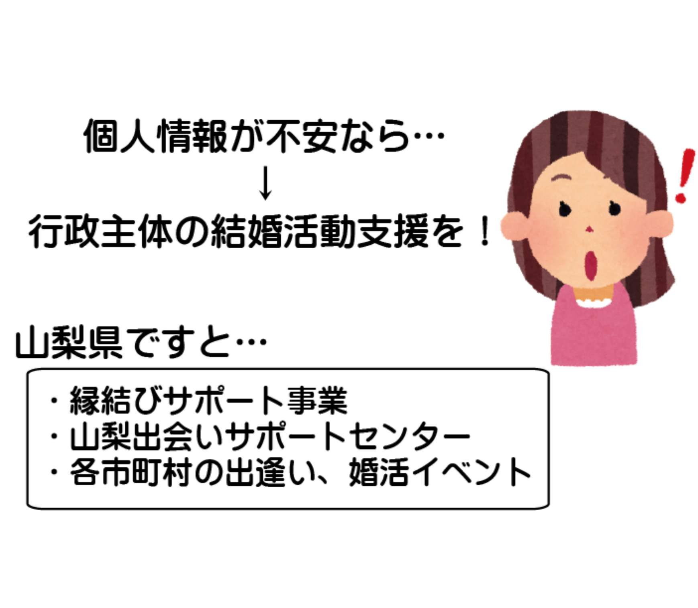

| あなたの娘や息子が１年以内に結婚するために親としてできること: 誰も教えてくれない結婚できない本当の理由 結婚活動 (恋愛結婚活動) | |
| 結婚活動コーチングトレーナー 入倉秀 | |
| (2018) | |
あなたの娘や息子が１年以内に結婚するために親としてできること
～誰も教えてくれない結婚できない本当の理由～
一般社団法人 日本地域活性化事業協会 代表理事
結婚活動コーチングトレーナー 入倉秀
定価４８００ 円( 税 込 )
～目次～
生涯未婚率...女性は５人に１人、男性は３人に１人は生涯独身という事実
娘、息子の結婚はあなたにかかっています！一番身近な親だからこそできること
いつかは結婚したいと思っているが、最初の一歩が踏み出せない子供達...それが普通
結婚活動を始めるタイミングは...結婚を意識したらその瞬間から
・最低限の恋愛、結婚するためのマナーやコミュニケーション能力があるか？
・運転免許の練習や就職活動と一緒で結婚活動は結婚するために必須です
・結婚活動の適切な知識～誤った結婚活動をしていても結婚できない？
・自分の意見を言う時は...必ず本人がどう思っているか確認する。言いっぱなしはＮＧ
・結婚に対する適切な情報を伝える。出産や妊娠を含め時系列で伝える
・すべてをやってあげようと思わない、サポートするくらいの軽い気持ちで
※４０歳過ぎても出産は遅くない？今は望めば出産できるので諦めない！
具体的に親がすること～これだけで結婚できる確率が一気に何倍にも！
・まずは結婚したいのかお一人様でいいのか？家族会議をして真剣に聞いてみる
・なぜ結婚したいのか？なぜ結婚できないのか本人の意見を聞いてみる
・仕事に集中したいのなら...ちょっとずつ出会いや恋愛を勧めてみる
・個人情報が不安なら...山梨県の活動を勧める。縁結びサポート事業など
・婚活イベントみたいな人が多いところは疲れてしまうと言われたら...山梨お見合いセッティングや山梨出会いサポートセンターを勧めてみる
・娘、息子が活動を始めたらごちゃごちゃ意見を言わない。そっと影から応援するだけ。たまには相談に乗ってあげよう
最後に...これからは親が子供の結婚相手を探す時代が来るかも...
※山梨県を基準に情報を掲載させて頂いております。各都道府県にて行政が運営する結婚活動支援内容は異なりますので、各都道府県に問合せをしてみてください。
『うちの子供が独身なのですが、そちらのイベントはどういったことをするのですか？』
『子供のために婚活イベントを探しているのですが、実際にそちらのイベントで結婚されている方はいらっしゃるのですか？』
冒頭からですが、最近独身者からの問合せ以外にこういった親御さんからの問い合わせも多く頂いております。自分のことのようにお子さんの結婚について真剣に考えられている親御さんが増えています。ですが、現実からお伝えすると結婚したくても結婚出来ない独身のお子さんが多いです。子供の結婚について考えるあまり子供の結婚を遠くさせてしまっている親御さんがいるもの事実です。当団体（山梨恋活コミュニティ）のアンケートや聞き取り調査で婚活イベントに出ようと思ったきっかけの上位に、親から結婚についての言葉や無言の圧力（笑）がきっかけで参加したというのがあります。親御さんの言動でお子さんの結婚（人生）が左右されてしまうのです。お子さんが結婚を選択するのか？お一人様を選択するのか？は親御さんにかかっていると言っても過言ではないかと思います。またお子さんが結婚するかしないかという問題は、親御さん御自身の老後や孫の顔が見えるのか？大きな影響を及ぼしますよね？きれいごとでは済まされない現実問題が山ほどあるのです。ご自身の老後の安泰のためにもぜひ、お子さんには結婚してもらいたいとは思いませんか？そこで最初に伝えておきたいことは...
【親のサポートで子供の結婚する可能性がプラスにもマイナスにもなります】
であればプラスのサポートをして少しでも早くお子さんの幸せな姿をみたいと思いませんか？そんなお子さんを心配している親御さんのお役に立てればと思い今回書かせて頂きました。
前置きが長くなりましたが、この小冊子を手にとって頂きありがとうございます。この小冊子をご覧になられているということは、ご自身の娘、息子さんが独身、または周りに独身者がいらっしゃるかと思います。ぜひこの小冊子をご覧頂き、結婚へのサポートに役立てて頂ければと思います。ですが、その前にこの小冊子を作成した【山梨恋活コミュニティ】の入倉秀について少しご紹介させて頂きます。私入倉は、何を隠そう婚活歴５年の元々は婚活参加者です。結婚活動を始めたのは２５歳の時。最初の１、２年は顔が怖い、坊主、無愛想というある意味３重苦...で全くモテませんでした。笑 連絡先を交換できても無視されたり相手にされなかったりとかなり悲惨な婚活を何度も経験しました。さすがにこのままではまずいと思い、婚活本を読んだり、婚活イベントにたくさん出たりという経験を通して、モテる、モテない人の違いなどを分析し、男性も女性も判断するポイントを理解しすぐに実践。段々とうまくいくようになりました。婚活４年目くらいからカップリングイベントでも８割以上のカップリング成功率（通常は全体の約１、２割がカップリングの成功率と言われています）となり汗と涙の賜物かなと思っています。３０歳の時に無事に婚活が終了（結婚）することができ、２０１５年１児の父として、出会いの無い独身男女の出会いの場を提供するために活動中です。
入倉自身が婚活中に主催を始めた【山梨恋活コミュニティ】は２０１２年に発足した団体です。活動内容は、出会いイベント（結婚活動）を始め、婚活イベントよりも参加しやすい恋活イベントを推奨しており、月に平均３０回以上の恋活イベントを山梨県内にて企画しております。参加人数も月３００名以上、２０１５年の実績として年間３６８９名も参加して頂き山梨県最大級の恋活イベントです。山梨県が運営する縁結びサポート事業（婚活イベント主催団体の支援事業等）の約７割以上（２０１５年１１月時点）は当団体がイベントを運営しています。恋活イベント以外にも少人数で楽しく出会える合コンのセッティングや、なかなか素敵な出会いがない方向けに結婚活動セミナーや講演会も開催しております。（詳細はホームペー ジ http://www.wincere2012.com / ）そんな私たち山梨恋活コミュニティのコンセプト、理念は山梨県の人口対策や少子化問題などの要因と考えられている、
【生涯未婚率（現状で男性２０％以上、女性は１０％以上）】
この未婚率を１０年後に５％台に低下させることや、
【出生率（現状の出生率は１、３前後を推移）】
この出生率を１０年後には２、０に向上させることを掲げ活動しております。もちろん、社会のことよりもまずは自分自信のお子さんのご心配をされている親御さんは多くいらっしゃいます。ですので、今回このような小冊子をご覧頂き、少しでもお役に立てればと思っています。お子さんが無事成婚しましたら今度は山梨県の生涯未婚率や出生率についてご協力頂ければと思っています。
山梨県を拠点に活動している山梨恋活コミュニティですが、今回このような小冊子を作成させて頂いたのには理由があります。２００７年頃から結婚活動に対する意識や情報が流れ出し婚活ブームにもなり、独身者を始め多くの方は、一度は耳にしたことがある婚活（結婚活動）。近年では、この結婚活動を誤解や認識ミスでなかなか素敵な出会いに繋がらないという方が急増しております。この原因としては、正確な情報が提供されていないこともありますし、周りで結婚に対して真摯に相談できる相手がいないということが挙げられます。独身者の場合、友達に相談する方が多いのは事実ですが、近年のプライバシーや個人情報、人間関係の疎遠化に伴い、自分自信のことを相談できる人が周りに減ってきてしまっているということも深刻な問題です。相談したくても話をしたりアドバイスをしてくれる方が周りにいないとどうなるか...恋愛や結婚に対して疎遠、後回しになったり、見て見ぬふりをしてしまいます。統計調査ではいずれは結婚したいと考えている独身者は山梨の場合９割以上もいるのに...。このようなことが実は独身の娘さん息子さんの中では起こっていたわけなのです。相談できる友達がいないのなら、家族に相談すれば？と思われたかと思いますが、実はここにも問題がありまして...。
【独身の子を持つ親として結婚活動に対する知識はどのくらいありますか？】
というのをまずは自問自答してみてください。時代の流れとともに親御さんが結婚した昭和の結婚観では平成は結婚できにくくなっているのが現実です。ではこの時代に結婚するためにサポートできる内容をご存知でしょうか？多くの親御さんは、お子さんに
『結婚は？』
『お付合いしている異性はいるの？』
などと聞くことはあるかと思いますが、それ以上に深いアドバイスをされている人はひと握りもいないかと思います。これではお子さんとしても相談したくても相談できない。だって相談したら答えばかり聞かれるわけですから、聞きたくなくなるのも事実です。実際に私入倉も同じ経験を何度もしました。母親に聞かれるたびに
『いつかは結婚するから』
『今異性を探しているところだからほっといて』
もちろん、親御さんも意地悪しているわけではないのは承知しています。ですが、現状を聞くくらいしか出来ないというのが現実問題としては大きいのです。
【何かしてあげたいけど何をしたらいいのかわからない】
もどかしいですよね。ではお子さんの活動を黙って見ていればうまくいくのか？というと実はその状態もかなり危険です。できることなら親御さんから結婚活動に対する知識や見解を増やして頂き、お子さんの結婚活動をサポートする関係を築いていただければと思っています。実は独身のお子さんでも結婚活動に対する誤解や無知から、結婚出来るのに結婚出来ない方はたくさんいらっしゃいます。これは私入倉が恋活イベントを主催していて肌で感じているところです。
まずは現状の結婚について親としてできることをこの小冊子でご理解頂き、お子さんが結婚しやすい環境を整えてあげるのも親としてできることなのかなと思います。
欲を言うと、お子さんが結婚に対して前向きな意識になれるようにアドバイス出来るとさらに結婚は近くなります。
後で紹介しますが、お子さんが結婚を意識して活動を始めて素敵な異性に出会ってしまえば、最短で１カ月、平均で３カ月から９カ月程度で婚約してしまいます。これは当団体（山梨恋活コミュニティ）で月平均２０組以上のリアルカップル、月平均５組の婚約のご報告で判明しました。（ちなみに、アンケートでは出会ってから１、２年くらいで結婚を考えたいと思われている方が大半を占めます）
もし、この小冊子をご覧頂き、何かご不明な点やご意見がありましたら、何なりと私入倉まで問い合わせをしてください。それではお子さんの幸せのためにまずは結婚や結婚活動についての知識を増やしてみてくださいね。
平成の時代に入り、【簡単には結婚できない】時代となってしまいました。ここで誤解が生じる方もいらっしゃいますので説明しておきますが、ある程度の知識と行動ができれば結婚はできます。これは私どもの活動を通じて得た確証です。ですが、何もしないで待っていても結婚できないという意味で簡単には結婚できないということです。親御さんの世代の方ですと、生涯未婚率（生涯結婚しない割合）というのはわずか２、３％というのが普通の時代でした。周りはほぼ結婚しており、結婚していない人は一クラス（３、４０人）に１人いるかいないか。昔から考えると結婚することが普通という認識だったかと思います。ですが、現実的に 今の日本では、結婚できないことが普通という時代に変わりつつあります。
もちろんこれには様々な要因が考えられます。労働条件の悪化や非正規雇用の増大に伴い収入の不安定化、男女平等から女性の社会進出の影響に伴い結婚に対する憧れ意識の低下など。まずは認識として、結婚は簡単にはできないという認識を持ってください。さらに言うと、結婚していない娘、息子に対して世間から恥ずかしいと思われる親御さんがいらっしゃいますが、実はもうそれが普通ですので恥ずかしいと思わないでください。
『私たち（親）が結婚できたのだからあなた（お子さん）も結婚して当たり前』
という認識でお子さんと話すのは結婚を遠ざける要因となりますのでご注意ください。
生涯未婚率について少し詳しくご紹介します。この数字は生涯独身である人の割合を示した数値なのですが、もうすぐ女性は５人に１人、男性は３人に１人という割合になるとのこと。４０人クラスをイメージしてもらえばわかりやすいかもしれませんが、男女各２０人のクラスでは女性２０人のうち４人、男性２０人のうち６、７人は生涯結婚できないという数値なのです。親御さん世代ですと、生涯未婚率や２、３％でしたので、４０人クラスだと男女合わせて一人いるかいないかの話しでした。いかがですか？数値を見ても昔と今は全然違うことが御理解いただけたでしょうか？今の時代結婚は簡単には出来ないのです。それが現状としては独身でいる人も普通に考えられるという意味では時代の変化とともに【お一人様】（生涯独身でいること）の選択をするお子さんももちろんいらっしゃっても普通ということです。ですので、あなたのお子さんが独身の場合、恥ずかしいことはありません。そういう選択をしているお子さんは世の中たくさんいらっしゃるのです。独身でいることが恥ずかしいと思っている暇があるなら、いかにしてお子さんが結婚したくなるのか？意識を結婚に持っていき、家族の素晴らしさや幸せな家庭というのをお伝えしてください。それが親として出来る最初の一歩になりますよ。
では、そんな娘、息子さんは結婚したいと思っていないのか？思っているのか？というと
【意識調査では約９割以上の独身者がいつかは結婚を考えているという調査結果があります】
皆さんのお子さんは、いつかは結婚をしたいと考えているのです。（これで結婚したくないという調査結果でしたら大変なことになっていましたが...）ではなぜ、結婚したいのに結婚できないのか...。前述でも書かせて頂きましたが、平成時代に入り結婚は簡単にはできません。待っていても結婚はできない時代なのです。
ある調査では独身女性の約７割が待ちの姿勢、独身男性の約６割が待ちの姿勢。
という結果があります。これではお互い待ちが半数以上で何も起こりませんよね。では何かが起こるには何をすればいいのか、結婚のためにまずは行動するしかないわけなのです。ですが、
【お子さんは活動できない...。それはなぜか？何をしていいのかわからない。最初の一歩が踏み出せない娘、息子さんが多いのです。】
これが現実なのです。ではそんなお子さんに親としてできることは何かあるか？ということで、親として今の時代にお子さんにどんなサポートができるのか？結婚活動というのはどういうものなのか？という 情報や知識を踏まえた上 で、一番身近な存在として相談にのったりアドバイスをするというのが、お子さんが結婚を意識したり考えたり、行動する上では非常に大切な要素となっています。親のサポートでお子さんの結婚が決まるといっても過言ではない世の中になるかもしれませんね。
前述で、結婚したいなら自分で活動すればいいのに？と思われた親御さんもいらっしゃるかもしれません。ですので、ここではその点についてご紹介させて頂きますね。 時代の流れとともに最初の一歩が踏み出せないのは仕方ないことなのです。 逆にいうとそれが普通といってもおかしくありません。なぜか？実は、
【人生の先輩が体験していないことを今の子供世代はしないと結婚できないからです】
冒頭で婚活（結婚活動）というのは７、８年前からよく耳にするようになったとお伝えしました。では、親御さんの結婚する要因というのに焦点を当ててみます。親御さんの世代の結婚したきっかけの上位は、社内恋愛や友人知人の紹介、家族や近所の知人からの紹介（お見合い）などが大きな要因でした。おそらくその時代には結婚活動という言葉はなかったですし、結婚するために活動するというのはナンセンスといっても過言ではなかったかもしれません。ほとんどの人が何もしなくても周りのサポートや会社組織によっていずれは結婚できたわけです。それが今はどうでしょうか？自分から結婚のために活動しないと結婚できない時代です。結婚したいけど誰をお手本にすればいいのか...。お手本がいないのが現実問題です。例えば、就職して仕事をする際には会社の先輩から仕事のいろはを教わって数年して一人前になるわけですよね。上司から何の説明もなく仕事だけ投げられて自力で仕事をしてきた人はごくひと握りだと思います。そういう感じで
【結婚したいけど何をしていいのかわからない】
【お手本や結婚の成功例が身近にいないので流れがわからない】
などと一歩が踏み出せないお子さんがいらっしゃるのは事実です。それが普通の世の中なのです。結婚するための活動を自らの経験や体験によって語れる世代がいなかったり、どういう風にすればうまくいくのかというのを伝えられないし伝わらないわけですから、お子さんも一歩が踏み出せないのが普通です。親としては、子供の幸せを考えるわけですから、
『早く結婚してほしい』
『早く素敵な異性を見つけて欲しい』
あわよくば『孫の顔を見せてほしい』
と思っている親御さんもいると思います。その幸せをどういうふうにすれば築けるのか？ぜひお子さんと考える時間を設けてみてはいかがでしょうか。
よく御相談や、質問であるのですが結婚活動を始めるのに時期やタイミングはありますかと問い合わせがあります。その時にお伝えするのが、活動を始めようと思ったその瞬間が一番ベストタイミングです。とくに何か必要なものがあったり、何かないと始められないものではありません。結婚すると決めた意識改革だけでもすぐに出来ますし、異性にすぐに会わなくても会うための準備はできますよね。例えば、異性うけする服装を買いに行ったり、髪型を変えてみたり、女性でしたら化粧や雰囲気を変えてイメージチェンジをしてみたりと自分で出来る事はたくさんあります。まずは自分が出来る事から始めるのがベストです。ですが、ここでつまずいてしまう人の原因として、
『今出来る事がないからまだ先でいいや』
と結婚活動自体を先延ばししてしまう独身者がいらっしゃることも事実です。実際に当団体（山梨恋活コミュニティ）に参加する方でも気付いたら３０代後半でした、４０代になっちゃいました。と焦って活動を開始される方もいらっしゃいます。結婚活動セミナーでもお伝えしているのですが、よくメディアや書籍などでは、結婚は年齢によって出来る確率が大きく変わると書かれている事を目にします。（年齢によっては、結婚出来るのは同年代の独身者の約１％程度などということも）これは一般論としては統計データから言える事かもしれませんが...
【実際に結婚活動を開始すればすぐに結婚出来る人もたくさんいます】
確かに確率は下がるかもしれませんが、０％ではありません。これは自信を持ってもらって大丈夫です。正しい方法で結婚活動すれば結婚出来る確率はぐっと上がります。
ここからは娘や息子さんが結婚するために必要なことをお伝えしていきます。必要だと感じるところだけかいつまんでもらってもいいですし、自分のお子さんに当てはまるところだけ何度も読み返して考えてもらっても大丈夫です。
一番大切なのはお子さんが本当に結婚したいのか、したくないのかというご自身の決意が大切になります。 親御さんが結婚を意識させてしぶしぶ活動をされている独身者もいらっしゃいます。その状態ですと素敵な出会いを引き寄せにくくなります。まずは、御本人が
【結婚を希望するのか？】
【お一人様を選択するのか？】
というのを自分の意思で選択 をさせてあげてください。実はここがかなり大切なポイントです。婚活イベントに参加している独身者で【親から言われて渋々参加しています】というお子さんは、周りからみても『結婚する気ないよね』という雰囲気を出しており、上手くいかないのが明白にわかることがあります。（もちろん全員ではありません）逆に、自分で意識して結婚したいと思い、結婚活動をしている独身者の方は真剣に探しているんだなということが相手にも伝わり、良い方向に行く方が多いのは事実です。親としては結婚してあわよくば孫もと思われる方は多いのですが、時代の変化とともにそれは普通ではありません。だって結婚出来ない人がたくさんいる時代ですからね。お子さんが結婚できたら 私はラッキーだったと思えるくらいが気持ち的に楽です。 逆に結婚していないお子さんは恥ずかしいと思うのは止めてくださいね。ここではお子さんがどんな選択をしたとしても心を広く、お子さんが選択した道をサポートしてあげるようにしましょう。サポートと何度も言葉を使わせて頂きますが、【甘やかす】という意味合いではありませんよ。しっかりと自分の意思を自分で決めれるように、その決定に対して後悔がないようにアドバイスや情報提供などという意味合いです。勘違いなさらないように。
結婚したいが結婚出来ない大きな要因の一つに出会いがないということが上位にきます。よく友達の紹介や合コンなどを行っているイメージですが、近年では出会いの機会が激減しているのが現状です。実際に当団体のイベントでも、日常生活に出会いがなくて参加される方がほとんどです。逆にいうと、
【出会いさえあれば早い方ですと、（山梨恋活コミュニティのイベントで）出会ってから３カ月から９カ月で婚約される方が多いです。】
アンケート調査で出会ってから結婚までの期間の上位は１、２年程度なのですが、お互い気がある男女が出会うわけですから話しが進むのはとんとん拍子です。これは当事者が仰っていましたが、婚約した本人が一番驚くくらいのスピードで進んでしまうみたいです。ですので、親としてはまずはお子さんが日常に出会いがあるのか無いのか？というところも知っておきたいですよね。お子さんが休みの日や平日の仕事終わりに家でゴロゴロしていていたり、趣味に没頭していたりすると結婚は遠いかもしれません。
気のある男女が出会えば話しは早いのですが、独身者の中には、
【最低限のマナーやコミュニケーション能力がないと異性から相手にされない】
ということがあります。就職活動でも内定をもらうまでに面接や筆記試験などがあることもあります。最低限の恋愛・結婚に対する知識や情報がないとこれからの結婚活動は厳しいのが現実です。就職活動では会社から相手にされないと就職内定できないですが、結婚活動では結婚お付き合いそれ以前のデートができないというわけです。どんなに結婚したくても結婚出来ないのはこれが原因でもあります。そういう時は、情報収集や婚活セミナーなどを利用するのも一つの方法です。自分の何がよろしくないのか？外見（服装や見た目）が異性にうけないのか？もしくはコミュニケーションの取り方が嫌われる要因なのかというところを見直した方が得策です。
結婚をする上で、これからの時代結婚活動は必須です。なぜかというと、結婚するために活動をしないと出会いがないからです。前述でもお伝えしましたが、独身男女の半数以上は待ちの方がほとんどです。実際に
【自然な出会い】
を求めて夢見る独身の待ち男女は多いのですが、時間しか経たないのが事実です。時間が経てば経つほど年齢的に不利になるのは男性も女性も一緒です。ですので、自分から何が必要か判断して結婚するために活動することは必要です。ここで大切になるのが心構えです。結婚したいのか？お一人様でもいいのか？というところをお子さんが真剣に考えていればいるほど結婚活動に対して意欲的になる方は多いです。逆に言えば、ここがはっきりとせず何となく活動している独身者はなかなか前に進めない方が多いのも現実問題です。結婚するためにまずは結婚活動を通して結婚に対する知識や情報を蓄えるのは必要な時代というわけです。
結婚活動は大切とお伝えしましたが、誤った結婚活動や間違った活動をしているといつまで経ってもゴール（結婚）は見えません。私入倉は多くの独身男女とお会いして話をする機会があるのですが、その際に勘違いした結婚活動概念があるとなかなか出会わないというのが事実としてあります。例えば、一般的な【理想が高すぎる】状態でしたり、異性に出会ったら良いところを見るのではなく、 悪いポイントに目が行ってしまい異性の品評会 をしてしまうなど。中には婚活イベントに参加するだけで結婚できると思っている方もいらっしゃいます。どういうことかというと、婚活イベントに参加することが目的でそのあとの進展が全くない（進展というのは自分から連絡先を交換したり１対１でデートに行ったり出来ない）方も多いです。
【間違った結婚活動が悪いわけではないのですが、結婚へは足踏み状態や遠回りになることは事実です】
そうならないためにも適切な知識や情報収集が必要になります。また異性選びのポイントや異性の条件、自分にあった婚活イベントを選ぶなども大切です。
何はともあれ、活動をしていて出会ってしまえば話しは早いです。多くの男女が結婚しているのが現状です。実際に【結婚活動をしている独身者】と【していない独身者】とでは、お付き合い、結婚出来る確率というのが（年代によって違いますが）２～１０倍くらいの確率の違いが実際にあります。結婚活動といっても婚活イベントに参加する事が全てではありません。独身の異性に積極的に会うだけでも結婚活動と言えます。もちろん、飲み会や合コンなども結婚活動です。街で気になる異性がいたらナンパするのも結婚活動の一つです。要は、
【結婚活動とは結婚するための活動をさし、その活動全てが含まれます】
結婚活動の一つの方法として婚活イベントがあると理解してくださいね。異性に出会う方法としては、金額は男性５，０００円前後、女性は２，０００円前後で約５～１０名くらいの独身異性と会えるわけです。実際にその金額を手に持って５～１０名の独身異性に会えと言われてもほとんど不可能に近いと思います。（コストパフォーマンスを考えてもお得でお勧めです）異性と合コンするにしても自分で異性の知り合いを探して日程調整や場所などを決める。それだけでかなりの時間がかかることがあります。ですが、婚活イベントですと、今ではインターネットで
【婚活 山梨】（ちなみにトップにくるサイトは山梨県が運営している婚活山梨というサイトです）
で検索しますと、多数の婚活団体が表示されます。その中から自分がいいなと思うイベントに参加するだけで結婚を求めている異性に出会えるわけです。非常に簡単で早いです。さらに山梨県ですと、山梨県行政が出会いサポートセンターというお見合い事業も運営していますのでそちらも金銭面では非常にお得です。（ちなみに入倉も公認サポーターですのでお引き合わせの際の出会いサポーターを行っています）婚活イベントに参加することだけが結婚活動ではありません。結婚活動の方法の一つに婚活イベントの参加があります。
それではここから親としてできることをお伝えしていきます。結婚する、結婚活動をするには前述のように様々な要素があります。そんな活動をお子さんはこれからした方が結婚への近道となります。もちろん、結婚活動をしなくても結婚出来る人はいますが、可能性はかなり低いです。自分なりでもいいので出来る事から積極的に行動することが大切なポイントです。では、そんなお子さんのために
【親が出来る事はどんなことがあるのか？】
【お子さんをサポートする心構えはどうすればいいのか？】
【お子さんが結婚を意識するにはどうすればいいのか？】
というのを次にお伝えします。
婚活イベントに参加する人の多くに
『親から結婚に対していろいろ言われて疲れてしまった』
『結婚活動をすることはいいのですが、親の発言が一番のストレスです』
と言われている方も実際にはいらっしゃいます。ここで大切なのが、お子さんの意思を尊重しているかということです。もちろん、お子さんの活動を邪魔しようと思って発言している親御さんはいないと思います。ですが、心配し過ぎるあまり、お子さんのストレスに繋がるということも事実として認識してください。まずはお子さんが結婚する意志があるのか？お一人様でもいいのかというのを
【ご自身で判断】させてあげてください。自分で決めることが大切です。
もちろん、親としては、【結婚して家庭を築いて子供も】と思われる方がほとんどかもしれませんが、そこはお子さんの人生ですので本人が悔いの残らないように選択してそれを第一に考えて頂ければと思います。婚活イベント参加者で親に言われて渋々参加しましたという方ももちろんいらっしゃいますが、見ていると楽しそうではありませんし、なかなかうまくいかない方が多いです。その要因として、行動が主観的ではなく、客観的に活動してしまうわけです。自分の結婚活動なのに自分が主体ではないわけです。それはうまくいかないですよね。他人目線になってしまいますから。また、親目線ではいつまでたっても子供なのですが、もう自立しているわけです。ですが、親の意見を押し付けるような言い方をしてしまうとか、
『あなたはこうなのだから』
と、決めつけた意見はお子さんからするとストレスのポイントになってしまいます。そこに関してはアドバイスとしてお子さんに伝えるのは良いのですが、くれぐれも強制はしないようにしてください。必ず親としてのアドバイスをしたらあなたはどう思っているの？と聞いてあげるようにしてくださいね。
では、ここで質問です。現在の婚活情勢をどこまで御存じでしょうか？結婚活動に婚活イベントがあって、そのイベントでは自己紹介タイムやカップリングというのがあるということは御存じかもしれませんね。
【まずはお子さんと真剣に結婚の話をする前に同じ土俵に立つように意識してください】
具体的には現状の婚活について情報収集や 、どういうイベントがどこで行われているのか？など何でも構いませんので、少しでもお子さんにアドバイス出来るようにしてください。テレビでお見合いの番組をしていたとか、ニュースで婚活が取り上げられていた、という情報をしっかりと確認したり、記事があればお子さんに見せてあげるというのも効果的です。ですが、
【何も知らない状況で口だけ挟むのはお子さんのストレスにしかなりません】
話し合いたくても、相談したくても知識や情報がなければお子さんも話ができないわけです。まずはどんなことでも構いませんので情報を集めるように意識してみてください。お子さんが結婚に対して興味を持つことから始めてみましょう。
ではここで実際にお子さんと結婚について話すときの注意事項です。必ずお子さんの意見を尊重するようにしてください。本人がどう思っているのか？が大切です。
『お母さん（お父さん）としては○○だと思うけど、どう思う？』
という感じで、本人の主体性が向上するような質問をしてあげてください。くれぐれも、
『これをこうやれば大丈夫だから、こうやりなさい』
と言った感じで言いっぱなしや決めつけはお子さんからするとストレスになりやすいですし、主体性が身に付きません。結婚はお子さんがするわけです。お子さんの人生ですので、ぜひ自分で選択するようにサポートしてあげてください。
これも多くの親御さんが聞いてしまうポイントです。実は私も独身の時は親から何度も聞かれたという苦い体験があります。
『結婚はいつするの？』
『お付き合いしている異性はいるの？』
と単刀直入に聞きたくなりますよね。相手がいないお子さんからするとタブーな質問です。もちろん、お付き合いしている異性がいらっしゃれば全然ＯＫだと思いますが、そうでなければあまり答えたくない質問です。実際に私もそうでした。お子さん的には、
『もう子供じゃないからそんなのほっといてよ』
と逆効果になりかねません。また、親からの結婚プレッシャーが強すぎて婚活したくない、結婚をしないと選択された方も何人も知っています。せっかくお子さんの幸せを第一に考えて話をしていても、お子さんからするとネガティブな思考になりかねないのです。親として出来ることは、お子さんが結婚を意識して前向きに結婚活動を自分からしようと思えるように意識を変えることが大切な要素です。
次に結婚に対する適切な情報を伝えるようにしてください。多くの親御さんは結婚活動を経験したことが少ないかと思いますが、結婚生活は必ず経験されていると思います。お子さんと同じ歳の時の自分の体験談や、これから先どういう家族プランがあるかなどを話してみるのもお子さんが結婚に対するイメージをしやすいポイントです。 とくに、男性も女性も結婚して出産や妊娠など時間がかかることは真剣に向き合うべきです。 年齢とともにお互いが向き合いたくない話題というのは承知していますが、だからこそ一番身近な親としてアドバイス出来ることはしっかりとしてください。近年では科学の進歩で４０歳を過ぎても出産は出来ますよね。ですが、妊娠出来る確率というのは若い方が確率は高いのは事実です。お子さんとの家族プランの話で、
【○○歳に結婚をして家庭を築いたい】
【結婚したら子供は○人欲しい】
という具体的な会話が出来るようにしてください。ここで大切なのはより具体的にイメージさせるということです。お子さんからすると体験したことないことがほとんどですから、イメージしにくいですので話しにくい内容です。ですが、ここである程度イメージができますと、逆算して自分の年齢では何をすればいいのかより具体的に理解できるようになります。なかなかうまくいかない例ですと...
【いつかは結婚して子供ができたらいいなぁ～】
よりも、
【今○○歳だから２年後までには結婚して子供はその１年後にほしいな】
となれば、２年後までに結婚するには今異性と出会ってデートやお付き合いをしないとプラン通りにならないとなりますよね。くれぐれも勘違いしないでほしいのは、自分の立てたプラン通りにいかないことがほとんどですが、結婚活動に対するモチベーションや結婚を考える大切なポイントになります。まずはそういうところから意識を変えてあげられると上手くいきやすいです。何度も言いますが、自分の思う通りにことが進まなかったり、うまくいかないことがほとんどです。だからこそ気付いたらすぐに行動できるとその分可能性も上がってきます。また、希望しても子供が出来なく不妊治療している方が多くいらっしゃることも事実です。となると今すぐにでも結婚活動を始めようとお子さんが思えるように情報を伝える事は大切です。
では実際に婚活に対して興味がなかったり、結婚をまだ考えていないお子さんの場合はどうするべきか...。結婚に対する情報を伝えるのはもちろんですし、
『結婚のすばらしさ』
をお子さんに伝える事も大切なポイントです。よく『結婚は人生の墓場』という話を耳にしますが、これから結婚しようかなと思っているお子さんにそんな話をするのは本末転倒ですよね。結婚に対するイメージを悪くするのではなく、
『結婚はいいよ。結婚は楽しいよ。』
と伝えられるとお子さんの意識も前向きになることもあります。だって実際に結婚してお子さんが生まれてここまで成長したわけですよね。もちろん育てる過程では楽しいことも大変なこともあったかと思います。親御さんも一人でいるよりも結婚を選んだ人生の先輩として、トータル的には家族がいる人生というのは１人の人生に比べて楽しいものだよと伝えられる親であってください。そういう心構えのもと、お子さんと会話をしていますと、お子さんの気持ちも少しずつ前向きになるかと思います。 一番身近な存在である【親】がお子さんの意識を結婚したいなと思わせるには適任です。 お子さんの友達でも芸能人でもありません。一番身近な親のアドバイスでお子さんは結婚について前向きに考えだせるのです。
ですが、時には過剰になりすぎたりお子さんが望んでいないサポートまでしてしまう親御さんがいらっしゃるのも事実です。もちろん、出来る事は何でもしたいと思う親心は非常に大切です。ですが、もう自立しているお子さんですので、まずは
【お子さんが結婚に対して活動しやすいようにサポートしてあげるというスタンス】
がベストです。親が何でもやってしまいますと、近年では簡単に離婚出来てしまう時代です。統計で３組に１組は離婚してしまいます。主体性を持って結婚活動をしないと結婚生活は難しいのかなと思います。ですので、いろいろとやってあげたい気持ちはわかりますが、お子さんの主体性を尊重してサポートしてあげてください。何度もお伝えしていますが、まずはお子さんが結婚を意識して結婚したいなと思えるようなアドバイスや情報提供が一番のサポートだと思います。
出産についてです、前述で少し触れましたが、出産は今の時代４０歳過ぎても出来ます。昔は高齢出産ということで３５歳以上はマルコウと言われていましたが、３５歳過ぎても出産は諦める必要はありません。独身の女性の方で４０歳を過ぎて子供が産めないから結婚はしたくないと判断される方も中にはいらっしゃいます。もうそんな時代ではありません。望めば出来ます。もしそういう悩みを持っているお子さんがいらっしゃいましたら、一緒に情報を調べたり親として適切な情報をアドバイスしてあげましょう。
最後により具体的に親御さんがお子さんに出来る事をお伝えさせて頂きます。これを一つでも実行することでお子さんの意識は変わるかもしれませんのでぜひお試しください。もちろん、全て意識できれば一番いいのですが、まずは一つでも意識してお子さんとコミュニケーションを取るようにしてみてください。少しずつで大丈夫ですので【焦らずに確実に】がポイントです。
一番大切なポイントは、本人が
『結婚を考えているのか？』
『お一人様でもいいと思っているのか？』
という人生のどちらを選択するのかということです。何度も言いますが、お子さんの人生ですのでお子さんの意見を第一に尊重してあげてください。それとお子さんの意見を真剣に聞く場をきちんと作るというのは大切です。曖昧や何となくでは非常にもったいないです。お子さんが結婚というものを考えてこれからどうしていきたいのかというのをぜひ親として話を聞いてあげてください。もし自分なりの意見がある場合は、そこを尊重して活動をサポートしてあげてください。もし考えが無い場合は、いろいろと情報を提供してあげるようにしてください。
これも大切なポイントですが、
『なぜ結婚したいのか？』
『なぜ結婚できないのか？』
本人の意見を聞いてみましょう。お子さんによっては、『周りが結婚しているから』『結婚してみたいから』『家族がほしいから』『親を見ていていいなと思ったから』と答えるお子さんもいらっしゃると思います。ここでポイントは、どんな回答があっても絶対に否定はしないようにしてくださいね。親として納得できない意見であっても肯定した上でこういう意見もあるとアドバイス程度にしてください。今の世の中、結婚がすべてではないと言っても過言ではありません。結婚を希望しないお子さんもいらっしゃってもおかしくありません。この話し合いでは、結婚について考える時間を持ち、自分はどう考えているのかということをお子さんに理解してもらうという大切な作業です。婚活イベント参加者にはよくお伝えするのですが、
【恋愛や結婚に正しいや間違っているなどの絶対はありません。自分の選んだ道が正しいです】
ですが、自分が選ばずに後悔だけはしないでください。結婚するかしないかも同じで正解や間違っているわけではありません。よくないのは、何も考えずに行動しないということです。一番後悔しやすいですのでしっかりと結婚について考える時間をお子さんに提供してあげてください。なかなか１人では結婚について考える事は少ないですし、仕事や趣味で忙しい場合は、自分人生について考えるタイミングがあまりないのは事実です。そうなってくると
『あの時こうしておけばよかった』
『もっと早く婚活して結婚しておけばよかった』
と思われ後悔されている方を多数知っています。そうならないためにも親として考える時間を提供してあげてください。お子さんの幸せを願うのであればお子さんが結婚について真剣に考える時間の提供というのも非常に大切です。

話し合いをしたときに、お子さんの意見として、
『今は仕事が忙しいから恋愛や結婚を考えている暇はない』
『私の人生は仕事一筋で十分』
と考えているお子さんもいらっしゃるかもしれません。もちろん、それが悪いわけではありませんし、仕事に専念されていて素敵なお子さんかと思います。ですが、結婚は時間やタイミングが大切なものでもあります。また親御さんも体験したことが多いかと思いますが、どんなに仕事が忙しくても恋愛は出来ますし、結婚生活は可能かと思います。そうです、同時進行可能なものなのです。ですが、前述でもお伝えしたとおり、何をしていいのかわからなかったり、一歩が踏み出せずに、趣味や仕事を理由に活動できていない独身者がいることは事実です。確かに忙しくてそこまで手が回らないかもしれませんが、時間は戻ってはくれません。お子さんが後悔しないように情報だけでもアドバイスできるといいかもしれませんね。
お子さんと結婚の話をしていて、恋愛、結婚したいけど異性がいないという問題に直面したら...。親としての立場からなんて答えますか？
親『それは困ったわねぇ～』
と同調した後ぜひ具体的に提示して挙げられると非常に良いですね。
親『婚活イベントに参加してみたら？』
とぜひ言ってみてください。親御さんやお子さんによっては、婚活イベントというとあまり良い印象を持たない方もいらっしゃるかもしれませんが、異性と出会うのには比較的簡単な方法の一つです。
子供『でも、婚活イベントって言ってもたくさんあってわからない...』
親『（山梨 婚活）でインターネット検索してみたら？』
そうです。【山梨 婚活】で検索しますと、山梨県の行政が運営している【婚活やまなし】というサイトが上位に来ます。（次の章で詳しく説明します）その何番目か下に【山梨恋活コミュニティ】という団体があります。これは私入倉が主催する団体です。月に３０回以上イベント企画し、（ちなみに当時山梨県公認のイベントの約７割以上企画中です）年代別や趣味別など様々なイベントを開催しております。そこでお子さんの年齢にあったイベントを探して、お子さんに提案してみるのも会話が弾むきっかけですよ。
【ただ、婚活イベントに参加してみたらと漠然と提案されてもお子さんは一歩が踏み出しにくいのです】
ですが。実際に自分の年齢があてはまっていたり、山梨恋活コミュニティの場合は、独身者が婚活イベントで疲れるポイントの１対１の自己紹介（回転すし方式）やカップリングを行っていないので、気軽に参加できます。これは婚活に初めて参加する人には非常におすすめのポイントです。通常の婚活イベントですと、両者はほぼ必ずと言っていいほどイベント内容に組み込まれています。そういうところもぜひお子さんに話してみてくださいね。山梨恋活コミュニティのイベントが気になる場合はイベント報告ブログもアップしていますので、ぜひご覧ください。
前述で少し触れましたが、お子さんや親御さんの中には、プライバシーや個人情報の管理という点で心配されている方が多くいらっしゃいます。私入倉も５年ほど結婚活動をしていたのですが、中には危険な婚活イベントも何度か経験しました。危険といっても命が危ないとかっていう世界じゃないですよ。笑 さくらや既婚者がいる婚活イベントもありましたし、ただ飲んで話して終わりというイベントもありました。やはり今の独身の方ですと、恋愛や異性とのコミュニケーションの取り方に不安があるという方が多いのが現状です。そういうときに自由の中にも何をやればいいのか？というのが明確になっているイベントを選んで頂けると非常に楽しいという経験になり、また婚活イベントに参加してみようかなと思う方が多いのは事実です。じゃあ、そういうイベントはどうすればわかるの？と思われる方も多いと思います。ここで話題になるのが、山梨県が運営する
【縁結びサポート事業】
です。インターネットで【婚活 山梨】で検索しますと上位にくるサイトです。この事業は山梨県が公認する婚活団体のイベント情報をまとめてアップしているという何ともお得なサイトとなっております。もちろん、山梨県公認団体が主催しますので、非公認の団体にくらべたら安心、安全です。山梨県内様々なところで開催していますので、ぜひ一度はご覧になってください。

お子さんの中には、婚活イベントのような大人数が集まるとちょっと疲れちゃうなと思われる方もいらっしゃいます。私が主催するイベントでも実際にそういうご意見を頂くことがあります。そういう場合はこちらも山梨県が運営している
【やまなし出会いサポートセンター】
をご利用してみてはいかがでしょうか？こちらは民間の結婚相談所を山梨県行政が運営しているというイメージです。もちろん、民間の結婚相談所もしっかりとサポートしてくれるところが多いみたいですので、そういった意味では強い見方ですよ。では大きく違う所は、山梨県が運営していますので登録料などの費用が非常にお安いという点です。
【２年間有効で１万円という激安です】
月になおすと月４００円ちょっとと非常にリーズナブルです。ちなみに、民間の結婚相談所ですと、登録料やお見合い費用、成婚料など数十万かかるところがほとんどです。（金額に似合ったサポートはしてくれるのでいざというときは民間の結婚相談所も一つの方法ですよ）では、出会いサポートセンターではどういうことをするかというと、１対１のお見合いを斡旋してくれます。まずは個人情報を登録して頂き、専用端末から異性の条件を絞り込み、良いなという異性がいたらお見合いを申込む。もちろん一連の流れはすべて専用端末ですのでお子さんも人の目を気にせず使いやすいというのがメリットの一つです。現在会員もどんどん増えており、２０１６年には１０００名を超える勢いです。年代も２０代から６０代くらいまでの独身者が登録しているのですが、自分にあった異性を選択できるというのが非常にいいです。逆に異性から気にいられると相手の方からお見合いを申し込まれることもあります。ぜひ登録してみてはいかがでしょうか？
また、『山梨恋活コミュニティ』を運営する一般社団法人日本地域活性化事業協会でも２０１７年から『山梨１対１お見合いセッティング』をスタート。こちらは入会金・月会費・成婚料は発生せず、お見合いが成立した際のセッティング料のみです。２０１８年時点で７００名を越える登録者数となりこちらもおすすめです。
最後になりますが、今まで様々な具体例を書かせて頂きました。冒頭でもお伝えした通りお子さんが活動を始めたらいろいろ言わずにまずはそっと影から応援してあげましょう。もちろん、つまずいたり不安が多くて立ち止まってしまった場合は、しっかりとサポートしてあげてくださいね。サポートするときは御自身もしっかりと情報収集をしてお子さんの役立つ情報の提供や自分の気持ちを大切にするようにお話し下さいね。くれぐれもお子さんの意思を尊重すること、自分で自分の人生に主体性を持つようにアドバイスをしたらどう思うか意見を聞くことは意識してくださいね。また、親御さんの中には素敵な異性が見つかったと、相手の条件を見て反対する親御さんももちろんいらっしゃいます。お子さんの幸せを願うあまり反対しているのはわかります。ですが、今の時代簡単には結婚できません。さらにいうと結婚はお子さんがするわけで親御さんがするわけではありません。お子さんがどんな相手を選んだとしてもそこは御自身の意思を尊重してあげてくださいね。くれぐれも破綻させるような言動だけは気をつけてください。
いかがだったでしょうか？これからのお子さんは結婚できるか出来ないかは親御さんのサポートにかかってくる時代が到来するかもしれません。何をしたら結婚できるのか？わからないお子さんにそっと情報を提供したり相談に乗ったり出来るのは一番身近にいる親であるあなたです。親御さんの発言一つで、結婚に前向きになったり、逆に消極的になるお子さんもいらっしゃいます。ですので、お子さんと話すときは結婚の素晴らしさやお子さんが結婚したくなるようなアドバイスをしてみてください。くれぐれも今から結婚しようとしているお子さんに結婚したくなくなるようなことは言わないでください。
人によっては親が子供の結婚についてとやかくいうのはナンセンスと言われている方ももちろんいらっしゃいます。私入倉の意見としては、自分の娘、息子さんが幸せになって頂ければ一番です。というところが真意ですので親として出来ることは、ぜひサポートしてあげればいいのかなと思います。結婚してしまえば、お子さんにも家族が出来るわけです。そこからは過保護はしにくくなりますので最後のサポートで結婚を後押しするのも大切かなと思います。
もし周りにも独身のお子さんがいて悩んでいる親御さんがいる場合はお話をしてあげてくださいね。適切な情報の共有はお子さんの結婚を後押ししますので。
今回お話した内容は、あくまでも第一歩でしかありません。もし今後お子さんが結婚に対して前向きに行動できるようになりましたら、さらに親としてサポート出来る内容が増えてきたり、相談内容によっては大切なポイントがあります。例えば、話し方やご飯の食べ方やちょっとした仕草など、男性によっては服装などのアドバイスも必要なことがあります。こういうことは、自分で学んで学習して頂ければ一番いいのですが、婚活イベントを主催している私からすると基本的なことができておらずもったいない思いをしている男女は多いです。でもそこの指摘をしてくれる親切な方は実は周りにはほとんどいないのです。そんな時こそ一番身近である親御さんがサポートしてあげるだけでも効果がでてしまうのです。ご要望があればそちらもお伝えしていければと思います。
それでは本書をきっかけにお子さんの幸せな人生に繋げて頂ければと思います。
山梨恋活コミュニティ 代表
結婚活動コーチングトレーナー
入倉秀
著者 入倉秀 山梨恋活コミュニティ代表
山梨恋活コミュニティ主催。一般社団法人日本地域活性化事業協会代表理事。ダイエットコンサルタント。ウォーキングランニングトレーナー。速読トレーナー。
２５歳から婚活を始め、１、２年は女性に見向きもされず相手にされなかった経歴を持つ。外見が悪ことは諦め、雰囲気や接し方・気遣いなどを勉強し、段々と女性に相手にされるようになる。婚活イベントや合コンに参加しまくるようになり毎月１０万以上使いお金がなくなる。金欠と自分と同じように出会いたくても出会えないもっと多くの方に出会いを提供したいと想い婚活イベントを主催するようになる。複数の団体を運営し、男性と女性について理解を深め、モテる男性とモテない男性の違いや女性の好みそうな男性像について実践を通して学ぶ。様々な恋愛相談や結婚相談、異性心理の相談を糧に２０１２年山梨恋活コミュニティを発足。２０１６年には山梨県では上位の月平均２０回のイベント企画、月間参加者３００名以上、年間参加者３５００名を突破し、おかげさまでリアルカップルや婚約・結婚する方々が続出中。山梨県では参加しやすいイベントの一つとして親しまれるようになる。自身は無事に３１歳の時に結婚。２０１５年１児の父親となり、出会いを求めている多くの独身男女に素敵な出会いの場を提供すべく活動中。２０１５年からは 、 Japan-Re birt h× 2.0 projec t を発足し、地域に根付いた婚活・恋活イベントを開催し素敵なパートナーとの出会いや２０２４年までに出生率２．０を目指し、地域活性化・少子化対策・晩婚化対策などでも奮闘中。
入倉結婚相談所 http://irikurakekkon.com/
山梨１対１お見合セッティング http://konkatsumap-yamanashi.com/omiaiset.html
山梨恋活コミュニティ http://www.wincere2012.com
山梨恋活コミュニティオフィシャルブログ http://ameblo.jp/wincere/
山梨代理婚 活( 親 活) http://www.dairikonkatsu.com/index.html
山梨２０代街コン恋活サークル http://www.koikatsu20.com/
入倉秀オフィシャルブログ http://ameblo.jp/no13is/